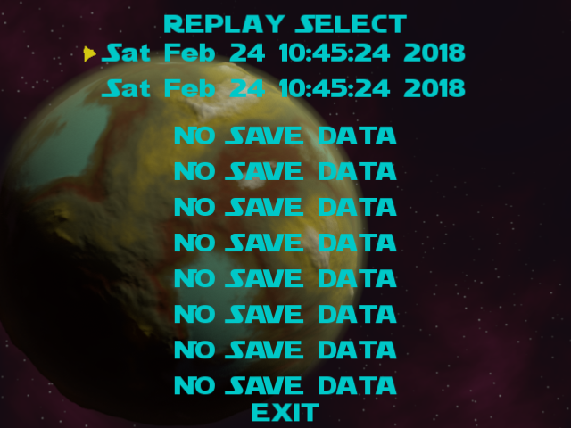
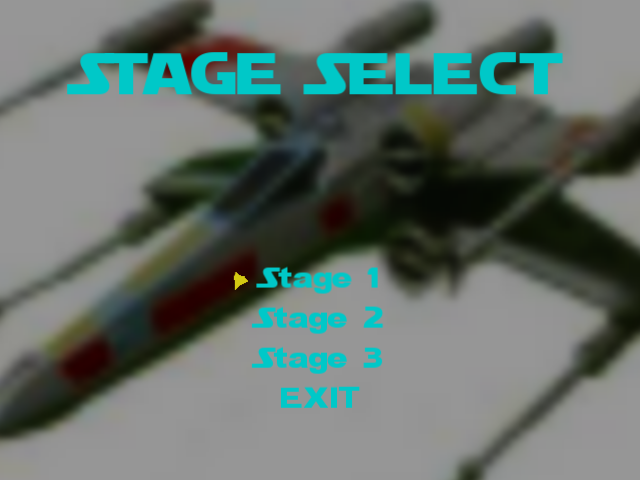

リプレイ選択画面

タイトル画面から遷移してきたときはリプレイ再生選択。ステージ選択画面に遷移。
ゲーム画面から遷移してきたときはリプレイ保存選択。
EXIT.......
タイトル画面に移動
ステージ選択画面

再生するステージを選択する。
リプレイデータに含まれていないステージは再生できない。
EXIT.....リプレイ選択画面に移動する。
リプレイ再生
リプレイ再生中はショットボタンで４倍速、攻撃タイプ変更ボタンで８倍速で再生できる。
ポーズボタンで再生の一時中断、最初から再生、ステージ選択画面に移動が選べる。